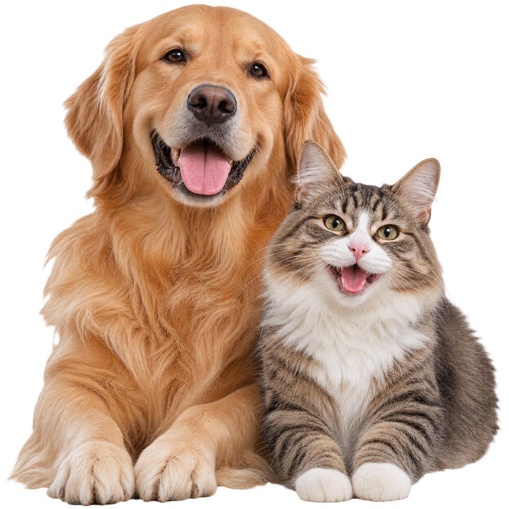
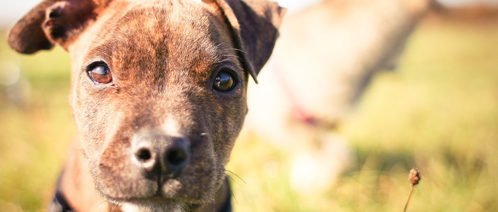

Atendimento veterinário
Consultas, vacinação e acompanhamento da saúde. Converse com nossa equipe sobre o atendimento que seu pet precisa.
ANA CAROL · VETERINÁRIA & PET SHOP
Tem focinho gelado, patinhas e um lugar enorme no seu coração? Então já é de casa. Aqui, saúde e carinho caminham juntinhos.

UM UNIVERSO DE CUIDADOS
Cuidado para cada fase da vida, com serviços que deixam a rotina de vocês mais leve.
Consultas, vacinação e acompanhamento da saúde. Converse com nossa equipe sobre o atendimento que seu pet precisa.
Higiene, hidratação e tosa com atenção aos detalhes. Um momento de cuidado para seu melhor amigo.
Rações, acessórios, brinquedos e caminhas. Encontre os favoritos do seu pet e consulte as opções de entrega.
Uma ajuda para a correria do dia a dia. Consulte a região atendida e combine o transporte do seu pet.
Vai viajar? Fale com a equipe sobre a hospedagem, a disponibilidade e os cuidados para a estadia do seu pet.
Carinho também é cuidar do sorriso. Consulte a escovação dos dentes e as orientações para a higiene bucal do seu pet.

PRAZER, SOMOS A ANA CAROL
A nossa história começou na Ponta da Praia, com um propósito simples: cuidar de quem faz parte da sua família. Hoje, estamos também no Boqueirão, reunindo saúde, bem-estar e praticidade para a rotina com seu pet.
A clínica é coordenada pelas veterinárias Dra. Ana Carolina Poletto Corrêa (CRMV-SP 14.739) e Dra. Juliana Poletto Corrêa (CRMV-SP 23.116).
PERTO DE VOCÊ
Escolha a unidade mais conveniente e fale diretamente com a equipe pelo WhatsApp.
Av. Dino Bueno, 71
Ponta da Praia · Santos/SP
Segunda a sexta8h às 20h
Sábado8h às 18h
Domingos e feriados10h às 16h
Av. Governador Pedro de Toledo, 84
Boqueirão · Santos/SP
Segunda a sexta9h às 19h
Sábado9h às 17h
Demais diasConsulte a equipe
Horários podem mudar em datas especiais. Confirme com a unidade antes da visita.
VAMOS CUIDAR DO SEU PET?
Escolha o serviço e a unidade. A conversa continua com nossa equipe no WhatsApp.
PODEMOS AJUDAR?
A gente te ajuda a dar o próximo passo.
Escolha uma das unidades e envie uma mensagem pelo WhatsApp. Nossa equipe informa os horários disponíveis e confirma o atendimento com você.
Sim, temos táxi dog. Consulte com a unidade a área atendida, os horários e os valores para combinar o transporte.
Você pode consultar rações, medicamentos e acessórios com a equipe. A disponibilidade, a região de entrega e a taxa são confirmadas pelo WhatsApp.
Fale diretamente com a unidade escolhida. Os valores e as condições variam conforme o serviço e as necessidades do seu pet.
MAIS CARINHO NO SEU FEED
Dicas, novidades e um pouquinho da nossa rotina com os pets.